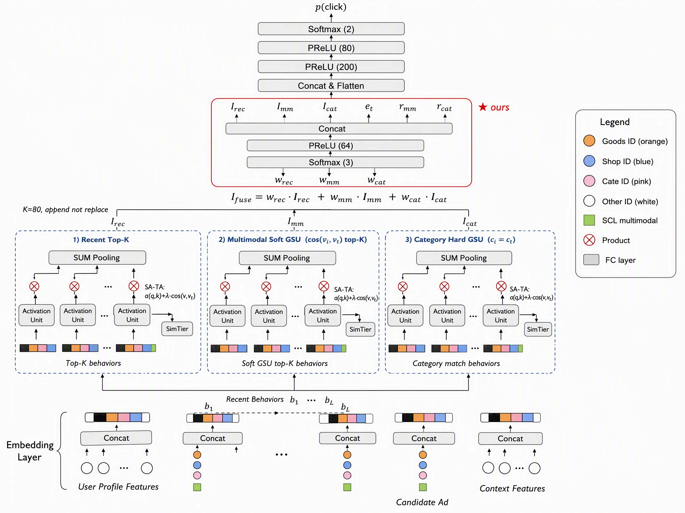
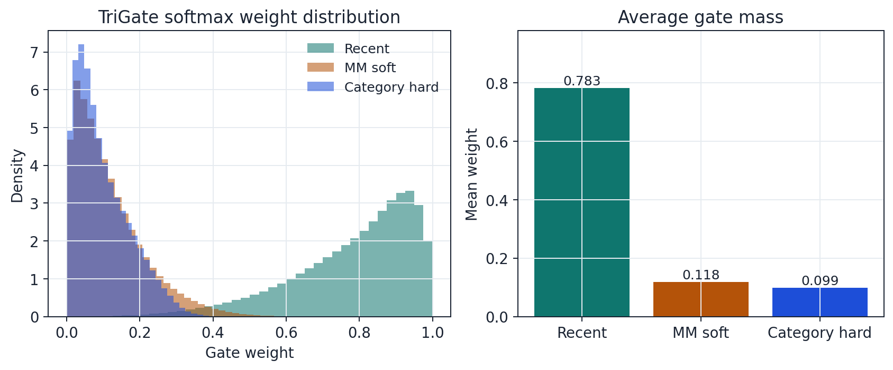
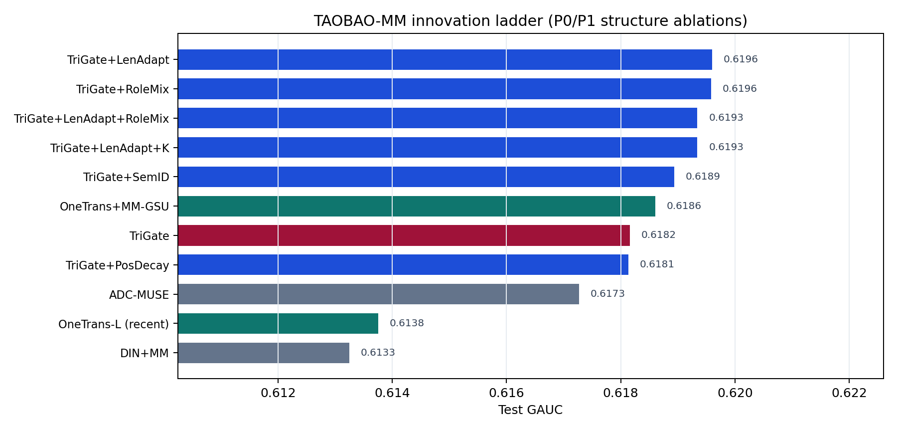
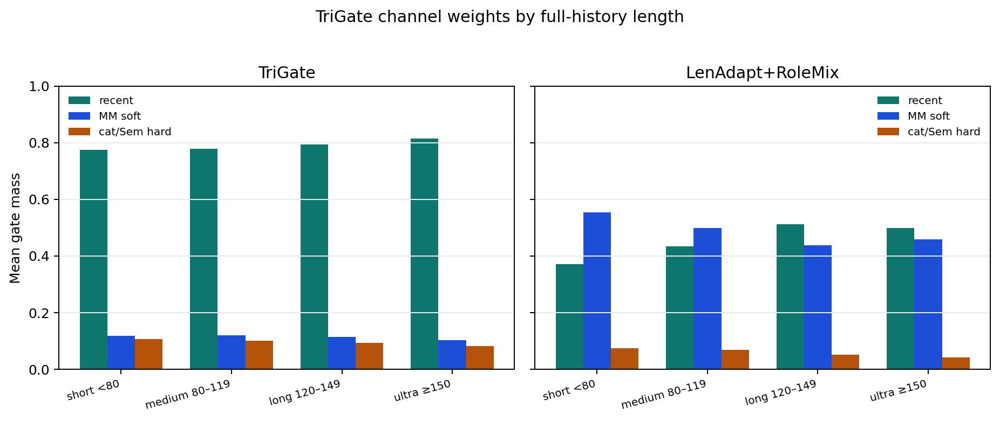
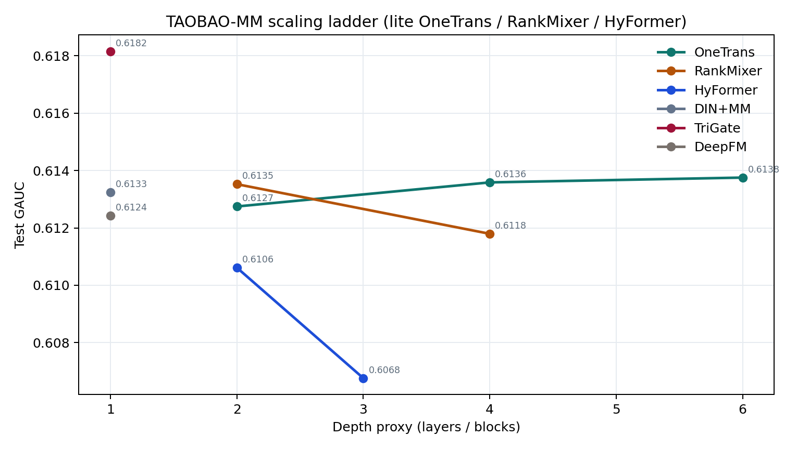
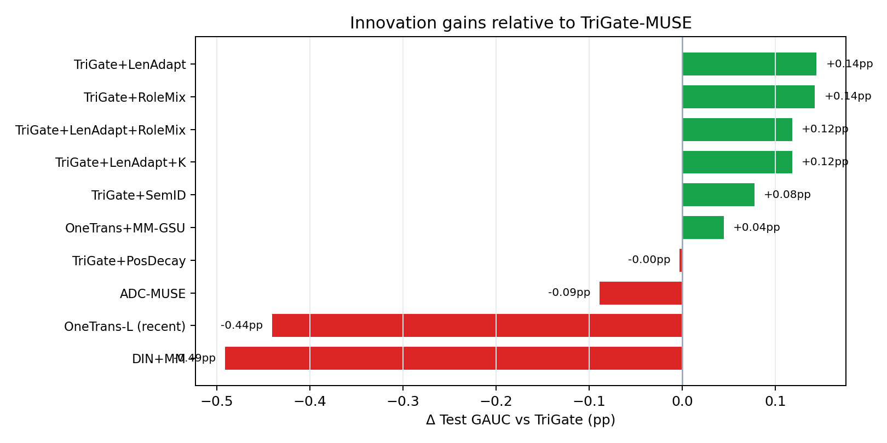
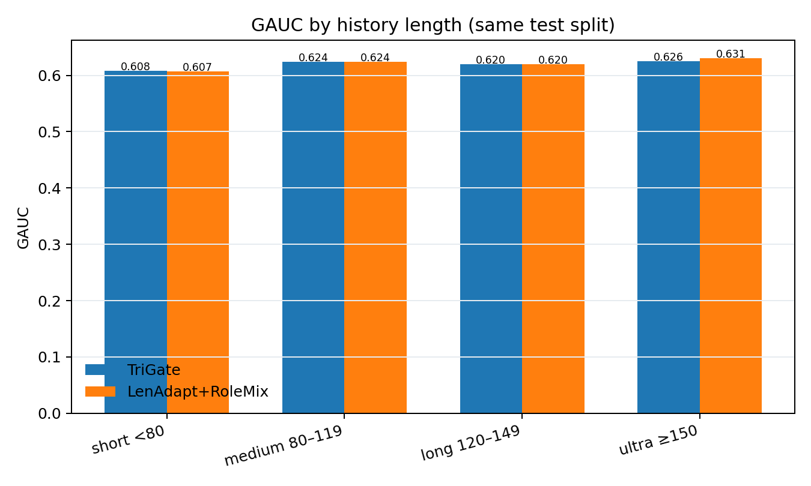
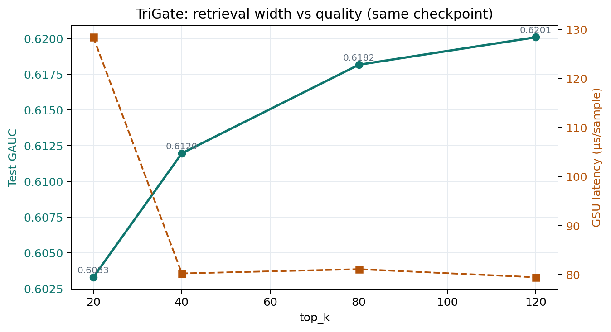

06 · 个人项目 / 独立完成 · 公开数据离线实验
基于多路检索与多模态融合的超长序列 CTR 预估
TriGate 三路门控为底座，LenAdapt / RoleMix 再抬点至 GAUC 0.6196；SimTier 消融与 Scaling 对照证明：涨点来自检索与多模态 ESU，不是加深骨干。
- Test GAUC
- 0.6196
- 相对 DIN+MM
- +0.63pp
- 相对 TriGate
- +0.14pp
项目背景｜超长行为序列下，均值池化与固定窗口都不够
特征交叉模型常把历史行为压成 mean pooling；DIN 能按候选商品做 target-aware attention，但历史继续变长后，无关行为会稀释兴趣并抬高计算成本。项目基于淘宝工业 CTR 公开数据 TAOBAO-MM 的部分 shard，构建约 2450 万训练 / 50 万验证 / 500 万测试样本的离线评测管线，历史最大长度 160，默认检索宽度 $K=80$。
这不是公司线上系统，也不是官方 76M/23M 全量协议复现。目标是在可核验的统一协议下，把“如何从超长历史中保留短期兴趣，同时补充跨时间相关行为”讲清楚。
项目目标｜检索融合 + 结构增强 + 对照闭环
项目目标分三层：
- 场景层：提升 CTR 排序，主指标用 GAUC，同时报告 AUC、LogLoss、ECE；
- 方法层：GSU/ESU → TriGate 三路门控 → LenAdapt / RoleMix；
- 对照层：SimTier 消融；关闭 GSU 加深骨干 vs OneTrans+MM-GSU。
技术路径｜TriGate → LenAdapt/RoleMix → Scaling
1. 建立完整基线。 复现特征交叉、DIN/DIEN、SIM/TWIN-lite 等基线与消融。DIN+MM 将 GAUC 提升到 0.6133，但仍暴露出固定窗口内“继续加复杂兴趣演化收益有限、瓶颈在超长历史检索”的问题。
2. 粗检索 + 精建模。 采用 SIM 两阶段：GSU 从长历史召回 top-k，ESU 再做精细建模。近因通道必须保留，检索只做增量补充。门控残差：
$$ \mathbf{h}_{\mathrm{fused}}=\mathbf{h}_{\mathrm{rec}}+g\cdot\mathbf{h}_{\mathrm{ret}} $$
近因系数恒为 1；检索质量差时 $g$ 接近 0，避免噪声污染。
3. TriGate 三路门控（创新底座）。 商品表征同时使用可训练 item ID、类目 embedding 与冻结 SCL 多模态向量。TriGate-MUSE 对 recent、MM soft GSU、category hard GSU 三路兴趣做 Softmax 门控：
$$ \mathbf{h}_{\mathrm{fused}}=w_{\mathrm{rec}}\mathbf{h}_{\mathrm{rec}}+w_{\mathrm{mm}}\mathbf{h}_{\mathrm{mm}}+w_{\mathrm{cat}}\mathbf{h}_{\mathrm{cat}} $$


4. LenAdapt / RoleMix（当前最优）。 在 TriGate 上引入长度条件门控（LenAdapt）与角色混合（RoleMix），二者并列最优：AUC 0.6209、GAUC 0.6196，相对 TriGate +0.14pp、相对 DIN+MM +0.63pp。Gate×历史长度切片显示：短序列显著抬高 MM soft（约 0.55），长序列再抬 recent；ultra 桶 Combo GAUC 高于基线 TriGate。LenAdapt⊕RoleMix 组合未叠加到更高 GAUC（0.6193），说明两路改进部分正交不足。


5. SimTier 消融与 Scaling 对照。 去掉 SimTier 后 GAUC 从 0.6173 降至 0.6128（约 −0.45pp）。同输入关闭 GSU 时加深 OneTrans/RankMixer/HyFormer 最好仅 0.6138；而 OneTrans 接入 MM soft GSU 后升至 0.6186，证明骨干必须吃检索输入。


6. 大规模训练工程。 compact 词表与频次截断、streaming memmap、embedding/dense 双学习率、按 val AUC 早停（ep2 易过拟合）。
项目结果｜主报 0.6196，对照说明瓶颈所在
主报 LenAdapt / RoleMix：在 500 万测试样本上取得 AUC 0.6209、GAUC 0.6196，相对 DIN+MM 约 +0.63pp，相对 TriGate 约 +0.14pp。SimTier 消融约 −0.45pp；OneTrans+MM-GSU 达到 0.6186。结论：涨点来自三路检索融合与长度/角色自适应，而不是“换更深 Transformer”。


面试表达建议：先讲 TriGate 分工，再讲 LenAdapt/RoleMix 抬点与 Gate×hist_len；用 Scaling 回答“为什么不直接上更深骨干”。不要宣称官方全量 SOTA、线上 A/B，或 LenAdapt+RoleMix 已叠加涨点。